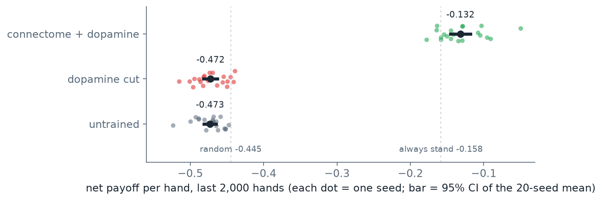
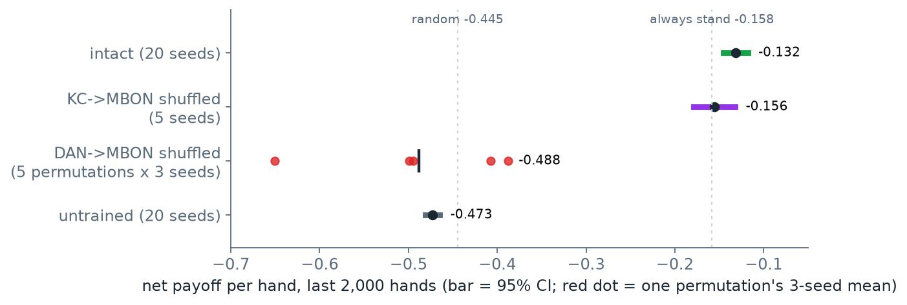

PART 4
重現成功只代表「照作者的做法會得到作者的數字」。這一頁改動做法本身，四項都在 21 點上做：把種子從三個加到二十個、兩層接線各打亂一次、換一批神經元、拿標記去對文獻
先說這一頁在做什麼。PART 3 照作者的設定重跑了 21 點：一個從果蠅腦連結體（整顆腦裡哪顆神經元連到哪顆、各有幾個突觸的清單；突觸是兩顆神經元之間傳訊號的接點，愈多連得愈強）切出來的蕈狀體（果蠅腦裡負責學氣味好壞的那一區）模型（PART 1），打 30,000 手 21 點，有多巴胺的那組成績會進步，沒有的不會。重現對上，只證明「照作者的做法會得到作者的數字」；它沒有回答的是：這個結論靠什麼撐著？換一副牌、換一批神經元、把接線打亂，結論還站不站得住？這一頁做四項作者沒做的檢查來回答。每一項都只改參數、對照組或讀法，不改作者的模型；程式在下載包的 blackjack/scripts/bj_extra.py（PART 6 第 4 節逐行讀它），結果另存，不覆蓋重現的輸出。代號 X1–X4 是本課自己編的。每一節照同一個順序寫：作者原本怎麼說、我們懷疑哪裡不夠、怎麼檢、事先訂下怎樣算過、結果、結論能說到哪裡為止。
本頁反覆用到的詞，先一條一條定義。
最後說明本頁問的是什麼：完整模型學會的打法只到「永遠停牌」的水準，本頁不再追它學到什麼打法（那是 PART 3 第 5 節與 PART 5 的事），只問有沒有學、靠什麼學，用成績有沒有離開對照組來判。
| 代號 | 問的問題 | 結果 | 對作者的結論有什麼影響 |
|---|---|---|---|
| X1 | 3 個種子的進步，會不會只是這 3 副牌的運氣 | 20 個種子：完整模型 −13.2%，切斷多巴胺 −47.2%，未訓練 −47.3%；兩邊的 95% 信賴區間完全分開 | 支持：「有多巴胺才會變好」不是運氣 |
| X2 | 打亂哪一層接線，21 點才學不會 | 打亂 KC→MBON：−15.6%，照樣學會；打亂 DAN→MBON：−48.8%，比未訓練還差，一致率掉到 33% | 部分支持：DAN→MBON 接線換掉、標記留著，21 點就學不會（甚至學反）；作者說的「接線本身重要」還沒和標記分開驗 |
| X3 | 換一批 KC，結果會不會變 | 全部 3,811 顆與三組隨機 1,200 顆，成績都在 −15.8% 到 −12.3% 之間 | 支持：結果不是作者挑的那 1,200 顆的特性 |
| X4 | MBON 的趨近／迴避標記與文獻規則一致嗎 | 97 顆中 62 顆一致 | 不影響 21 點的結果；但標記不能拿來談生物學 |
每一列的數字出處見下面對應的小節；全部出自 out/blackjack/bj_extra.json（X1 到 X4 各一個段落：X1_seeds20、X2_layers、X3_kc_subsets、X4_mbon_valence）。
作者的說法：完整模型 3 個種子打 30,000 手，成績從 −45% 進步到 −16%（作者寫在程式註解裡的數）；PART 3 用同樣 3 個種子重跑得到 −14.8%，本頁拿後者比；兩個對照組不動（PART 3 第 4 節）。懷疑：PART 3 已經看到單一種子的成績彼此可以差到 7 個百分點（未訓練那組 3 個種子是 −44.8%、−46.9%、−52.3%）。3 副牌很少；如果再換 3 副，「進步」會不會變小、甚至消失？另外作者的 3 個種子是 0、1、2，是他選的，會不會剛好挑到學得好的？檢法：三個條件各改用 20 個種子（0 到 19，前 3 個就是作者的 3 個），每個 30,000 手，其他設定全部照舊。怎樣算過：事先訂兩條。第一，完整模型 20 個種子的 95% 信賴區間要和兩個對照組的完全分開，才算「有多巴胺才會變好」站得住；第二，作者那 3 個種子的平均不能比 20 個種子的平均更好（成績更高），更好才是挑過的跡象。95% 信賴區間怎麼算：20 個種子的平均 ± 1.96 × 標準差 ÷ √20；意思是重複做很多次這樣的 20 個種子，平均值落在這個範圍內的把握是 95%。它說的是「平均值有多準」，不是「單一個種子會落在哪」。

scripts/make_figures.py 從 out/blackjack/bj_extra.json 的 X1_seeds20 畫出。| 條件 | 作者的 3 個種子（PART 3） | 20 個種子的平均 | 95% 信賴區間 | 一致率（20 個種子平均） |
|---|---|---|---|---|
| 完整模型 | −14.8% | −13.2% | −14.5% 到 −11.8% | 47.9%（46.1% 到 49.7%） |
| 切斷多巴胺 | −47.5% | −47.2% | −48.2% 到 −46.3% | 45.0% |
| 未訓練 | −48.0% | −47.3% | −48.1% 到 −46.5% | 45.0% |
由 blackjack/scripts/bj_extra.py 算出，輸出在 out/blackjack/bj_extra.json 的 X1_seeds20（每個條件的 last 是成績、agree_last 是一致率）。切斷多巴胺與未訓練的一致率 20 個種子全部恰好是 45.0%：兩組的 KC→MBON 連結從頭到尾沒變過，260 格表就是沒學過的那一張，與種子無關。
結果：第一條過：完整模型的區間（−14.5% 到 −11.8%）和兩個對照組的區間（都在 −48% 上下）之間隔了三十幾個百分點，完全不重疊；單看圖 1，完整模型最差的一個種子（−17.8%）也比對照組最好的一個種子（−43.9%）好。切斷多巴胺與未訓練只差 0.1 個百分點：探索本身不改變最後的成績，差距全來自學習。第二條也過：作者 3 個種子的平均 −14.8% 比 20 個的平均 −13.2% 略差，不是挑過的方向。結論：「有多巴胺才會變好」不是這 3 副牌的運氣。順便看到兩件事。第一，作者在 README（程式附的說明文件）寫完整模型與基本策略一致 52%；PART 3 用 3 個種子重跑是 45.3%，本頁 20 個種子是 47.9%，區間 46.1% 到 49.7% 不含 52%，沒對上，原因本課沒有追到（PART 3 第 5 節）。第二，一致率量不出有沒有學到策略：完整模型學完 47.9%，比沒學過的 45.0% 只高 2.9 個百分點，成績卻進步了三十幾個百分點。成績和一致率量的不是同一件事，很多張不同的 260 格表都能打出「永遠停牌」上下的成績。
蕈狀體裡有兩層接線跟學習有關（PART 1 第 4 節）。KC→MBON：Kenyon 細胞（把每種「氣味」，在 21 點裡是每種牌面配動作，編成一組活化的那群神經元，簡寫 KC）連到輸出神經元（MBON）的連結，學習時被多巴胺削弱的就是這一層。DAN→MBON：多巴胺神經元（DAN）連到哪些 MBON，決定獎賞與懲罰的訊號送到誰，整場固定不變。作者的說法：作者在氣味制約實驗（讓同一個蕈狀體模型學「某種氣味配電擊、另一種不配」，是作者的主實驗，21 點是後來加的；本課不重現，PART 1 第 7 節簡介）裡做過一個對照：把 KC→MBON 打亂，學習幾乎不受影響。他的解讀是：KC 連到哪顆 MBON 不重要，重要的是懲罰與獎賞的訊號能送到哪些 MBON，也就是 DAN→MBON 這一層。懷疑：這是推論。作者沒有直接打亂 DAN→MBON 來驗；而且兩層在 21 點上都沒試過，21 點的學習參數和制約那組不同：被削弱的連結會慢慢回到原值（回復），21 點裡這個回復慢 240 倍（PART 1 第 4 節），學到的東西留得比制約實驗久得多，制約上的結果不一定搬得過來。
檢法：兩層各打亂一次，再各打 30,000 手，其他全部照完整模型。打亂 KC→MBON 用作者自己程式裡的打亂法（PART 6 第 6 節：連結的強度全部重新分配、再把 KC 的列隨機調換，每顆 MBON 的夥伴數不變），5 個種子各一種打亂。打亂 DAN→MBON 作者沒寫，本課寫：把「每顆 DAN 連到哪顆 MBON」這張表的 MBON 欄位隨機重排，每顆 DAN 送出的量不變、每顆 MBON 收到的量換成另一顆原本收到的；MBON 的趨近／迴避標記不動。做 5 種重排、每種 3 個種子，共 15 次。兩層次數不同的原因：打亂 KC→MBON 用作者的程式，打亂的方式和牌序由同一個種子決定，一個種子就是一種打亂配一副牌，分不開；打亂 DAN→MBON 是本課自己寫的，重排和牌序分開控制，每種重排配 3 副牌，才看得出同一種重排換牌會差多少。怎樣算過：如果作者的解讀對，打亂 KC→MBON 的成績應該仍在完整模型的水準（X1 的 −13.2% 上下），打亂 DAN→MBON 的應該掉到對照組的水準（−47% 上下）。

scripts/make_figures.py 從 out/blackjack/bj_extra.json 的 X1_seeds20 與 X2_layers 畫出。| 接線 | 打亂幾次 | 成績 | 95% 信賴區間 | 一致率 |
|---|---|---|---|---|
| 完整模型（沒打亂，X1） | 20 個種子 | −13.2% | −14.5% 到 −11.8% | 47.9% |
| 打亂 KC→MBON | 5 種 × 1 個種子 | −15.6% | −17.9% 到 −13.2% | 43.4% |
| 打亂 DAN→MBON | 5 種 × 3 個種子 | −48.8% | 5 種各自的平均：−38.8%、−49.5%、−40.7%、−65.0%、−49.9% | 33.1% |
| 未訓練（X1） | 20 個種子 | −47.3% | −48.1% 到 −46.5% | 45.0% |
輸出在 out/blackjack/bj_extra.json 的 X2_layers（kc_mbon_shuffled 與 dan_mbon_shuffled；後者每一種重排一個 per_permutation 段落，mean_of_means 是 5 種的平均）。打亂 DAN→MBON 那列不給一個總的信賴區間，因為 5 種重排彼此差太多（從 −38.8% 到 −65.0%），平均一個區間會把這件事藏起來。
結果：兩條都照預期，而且第二條比預期更強。打亂 KC→MBON 之後照樣學會：5 個種子的成績 −19.5%、−14.6%、−12.6%、−14.2%、−16.9%，平均 −15.6%，區間與完整模型的重疊，仍在「永遠停牌」那條線附近。打亂 DAN→MBON 之後不只學不會，平均 −48.8%，比什麼都沒學的未訓練（−47.3%）還差，一致率從沒學過的 45% 掉到 33%：它不是沒動，是往基本策略的反方向動。一致率分不出「學一點」和「沒學」（X1），但掉到這個程度只出現在打亂 DAN→MBON 的時候：完整模型、各種 KC 選法（X3）、打亂 KC→MBON 學完的一致率共 37 次，全部在 37.7% 到 59.2% 之間；打亂 DAN→MBON 的 15 次全部在 29.2% 到 36.5%，兩組完全不重疊。五種重排裡最差的一種三個種子都在 −65% 上下，比隨機亂選（−44.5%）還低了 20 個百分點。
為什麼會比沒學還差。這是學習規則的必然後果，不是意外。先把第 1 節的定義接起來：每顆 MBON 帶 +1（趨近）或 −1（迴避）的標記；某牌面配某動作的好惡值＝各 MBON 的活動 × 標記加總，好惡值高的動作會被選。PART 1 第 4 節說過，多巴胺只會削弱 KC→MBON 的連結，所以要讓好惡值下降，只能削弱 +1 型 MBON 的輸入；要讓它上升，只能削弱 −1 型的輸入。再接上標記怎麼來的（第 1 節）：標記是從這張 DAN→MBON 表數出來的，懲罰群 PPL1 連到的 MBON 幾乎都被標成 +1，獎賞群 PAM 連到的幾乎都是 −1。所以輸了的時候，懲罰多巴胺削弱的是 +1 型 MBON 的輸入，這個牌面配這個動作的好惡值往負走，「輸了就少做」成立。贏了的時候，獎賞多巴胺削弱的是 −1 型的輸入，好惡值往正走，「贏了就多做」成立。方向剛好對，不是巧合，是因為標記本來就照這張表定的。重排之後標記沒動、接線換了，懲罰訊號落到哪些 MBON 就跟標記脫鉤。本課量了這件事：原本的接線裡，一單位懲罰有 97.1% 落在趨近型 MBON、一單位獎賞有 92.8% 落在迴避型 MBON，兩個方向都「對」；5 種重排之後，懲罰落在趨近型的只剩 52.7% 到 61.5%，獎賞落在迴避型的只剩 35.8% 到 47.1%。獎賞那一邊過半落在趨近型 MBON，意思是贏了之後，這個牌面配這個動作的好惡值反而往負走，模型從贏的手學到「下次別這樣打」。這就是成績會比什麼都不學的未訓練還差、最差一種到 −65%、一致率掉到 45% 以下的原因。五種重排裡獎賞對齊得最差的那一種（35.8%）正是成績最差的那一種（−65.0%）。
對齊比例由 scripts/x2_alignment.py 從作者的 data/mb_circuit.npz 算出，用與 bj_extra.py 相同的亂數重建 5 種重排，輸出在 out/blackjack/x2_alignment.json。
結論：在 21 點上，DAN→MBON 這層接線一換、標記留著，就學不會；KC 連到哪顆 MBON 無所謂。作者推論的是「這層接線本身重要」，這次驗到的範圍比較窄：接線換掉、標記沒跟著換就壞，接線本身重不重要還沒和標記分開驗。接線換掉會壞，可能的原因是：作者的趨近／迴避標記本來就是從這層接線數出來的，兩者綁在一起才學得對；把接線換掉、標記留著，兩者就錯開，模型就學反。這也回答了 PART 1 第 4 節留下的問題「標記一半是資料、一半是人設」在實驗上意味著什麼。資料是「這顆 MBON 主要收懲罰群還是獎賞群的突觸」（從接線數出來），人設是「主要收懲罰群就標 +1」這條對應規則；兩者必須對齊，模型才能學，X4 會再從另一個角度看這件事。最直接的驗法是打亂之後把標記照新接線重新數一次、再打一次；本課沒做。若那樣又學會，就確定重要的是「接線與標記一致」，而不是這層接線本身。
作者的選擇：蕈狀體路徑上（同時接到輸入神經元 PN、又連到輸出神經元 MBON）有 3,811 顆 KC，作者只取 1,200 顆：依每顆「從 PN 收到的突觸數加送到 MBON 的突觸數」（也就是它上下游連結的總量）排名、等距取（PART 3 第 3 節）。他說是為了省計算。懷疑：結果會不會是這 1,200 顆的特性？排名等距取到的是各種大小都有的 KC；換成隨機抽的 1,200 顆、或乾脆全部用上，21 點還學不學得會、學到一樣的水準嗎？檢法：用作者的切法程式重新切四個蕈狀體：全部 3,811 顆、以及三組隨機抽的 1,200 顆（三組用不同的亂數），每個蕈狀體打 3 個種子、各 30,000 手，和作者一樣用種子 0、1、2，所以可以直接和 PART 3 的 3 種子結果比。怎樣算過：作者選法的 3 種子平均 −14.8% 要落在每一種選法 3 個種子的 95% 信賴區間內。3 個種子的區間很寬，這條標準不嚴，所以結果表裡同時列出每個種子的值，讓你自己看散佈。
| KC 選法 | KC 數 | 3 個種子各自的成績 | 平均 | 95% 信賴區間 | 一致率（沒學過 → 學完） |
|---|---|---|---|---|---|
| 作者的選法（排名等距，PART 3） | 1,200 | −15.0%／−16.4%／−12.9% | −14.8% | −16.8% 到 −12.8% | 45.0% → 45.3% |
| 全部 | 3,811 | −16.1%／−9.2%／−12.6% | −12.6% | −16.5% 到 −8.7% | 45.4% → 42.3% |
| 隨機一 | 1,200 | −13.2%／−14.8%／−10.9% | −13.0% | −15.2% 到 −10.7% | 42.7% → 43.2% |
| 隨機二 | 1,200 | −15.0%／−12.1%／−9.8% | −12.3% | −15.2% 到 −9.3% | 40.8% → 40.1% |
| 隨機三 | 1,200 | −16.0%／−16.8%／−14.7% | −15.8% | −17.0% 到 −14.6% | 49.2% → 43.1% |
輸出在 out/blackjack/bj_extra.json 的 X3_kc_subsets（每種選法一個 variants 段落，n_kc 是顆數）；作者選法那一列是 PART 3 第 4 節的重現結果（out/blackjack/bj2_blackjack_30000.json），它的信賴區間是 X1_seeds20 裡 first3 那一段。用全部 KC 切出來的連結數（22,581 條 PN→KC、57,823 條 KC→MBON）也存在這裡（out/blackjack/bj1_edge_counts.json），PART 3 第 3 節拿它對 README。
結果：四種選法的平均都在 −15.8% 到 −12.3% 之間，作者的 −14.8% 落在每一種的區間內，四個蕈狀體都學到了「永遠停牌」上下的水準；一致率的欄要看「沒學過 → 學完」：每一種選法沒學過的一致率本來就不同（連結不同，沒學過時三個動作的好惡值就不同），學完有升有降，最多掉六個百分點（隨機三），和作者選法一樣沒有因為學習而明顯上升。全部 3,811 顆並沒有學得比較好（−12.6%，和 1,200 顆的幾組分不開），只是每 30,000 手從 13 秒變成 30 秒。結論：結果對 KC 怎麼挑不敏感，作者取 1,200 顆省計算，沒有改變結論。（沒學過的一致率與 X2 那段的兩組範圍由 scripts/part4_extras.py 算出，在 out/blackjack/part4_extras.json。）
和 X2 的關係。這和 X2 是同一件事的兩面：KC 這一層（挑哪些 KC、KC 連到哪顆 MBON）怎麼動都無所謂，因為學習本來就會把 KC→MBON 的連結強度重寫；決定學不學得會的是 DAN→MBON。
作者的做法：給每顆 MBON 標「趨近」或「迴避」的依據，是它主要接收哪一群多巴胺神經元：主要來自 PPL1（懲罰群）標趨近、主要來自 PAM（獎賞群）標迴避（為什麼反過來，見 PART 1 第 4 節）。為什麼被懲罰訊號管的反而叫趨近：多巴胺只會削弱，懲罰要讓好惡值下降，只能削弱 +1 型的輸入，所以被懲罰群管的 MBON 就被定義成 +1 趨近型（第 3 節走過的那條規則）。作者在 README（程式附的說明文件）明說沒有拿這些標記去對照文獻裡已鑑定的 MBON。懷疑：標記是從多巴胺輸入數出來的，沒有對過任何實驗證據。如果標記對不上真實果蠅，PART 3 的學習結果還成立嗎？標記能不能拿來談生物學？
檢法：用一條簡化的文獻規則做粗略對照。Aso 等人 2014 年在 eLife 用光遺傳學（把光敏蛋白放進特定神經元，用光就能讓它放電）逐類活化 MBON，看果蠅趨近還是迴避，發現釋放麩胺酸的 MBON 多半促成迴避，釋放乙醯膽鹼或 GABA 的多半促成趨近（doi:10.7554/eLife.04580）。傳導物質是神經元放電時釋放給下游的化學訊號，PART 1 第 3 節決定連結正負號的也是它。這條規則有已知的例外，這裡只當粗略對照。MBON 的傳導物質用 MaleCNS（作者用的那份雄果蠅腦連結體資料）附的預測值：它是從電子顯微鏡影像用機器學習猜出來的，可能猜錯，猜錯的那顆就會被算到錯的一列，所以這張表也只能當粗略對照。怎樣算過：這一項沒有「過／不過」的門檻，要回答的是「一致的比例有多高」，以及不一致對 21 點的結果有沒有影響。與作者的標記列成交叉表：
| 預測的傳導物質 | 作者標趨近 | 作者標迴避 | 文獻規則預期 |
|---|---|---|---|
| 乙醯膽鹼 | 38 | 12 | 趨近 |
| GABA | 8 | 13 | 趨近 |
| 麩胺酸 | 10 | 16 | 迴避 |
粗體是與規則一致的格子。輸出在 out/blackjack/bj_extra.json 的 X4_mbon_valence，含逐顆的對照表。
結果：一致的是 38 ＋ 8 ＋ 16 ＝ 62 顆，占 97 顆的 64%；GABA 那一群多數相反。64% 算高還是低：若標記和傳導物質無關、只保留 56 顆趨近與 41 顆迴避的比例，照交叉表的行列總數算，碰巧一致的期望是 52 顆（53.6%）；62 顆比它多了十顆，有對上的跡象但不強（期望值由 scripts/part4_extras.py 算出，在 out/blackjack/part4_extras.json）。結論：21 點的結果不受這件事影響，原因就是 X2 量到的那件事：標記本來就是從 DAN→MBON 的接線數出來的，主要被懲罰多巴胺管的 MBON 一定被標成趨近型，所以「輸了就削弱趨近型的輸入」在模型裡依定義成立，不需要標記對得上真實果蠅；X2 把接線換掉、標記留著，學習才壞掉。但它也表示：「哪些 MBON 驅動趨近」不能從這個模型讀出生物學結論，有三分之一的標記和文獻規則相反。要逐顆確認，得把 MaleCNS 的 MBON 編號對到文獻裡已鑑定的 MBON，本課沒有做。